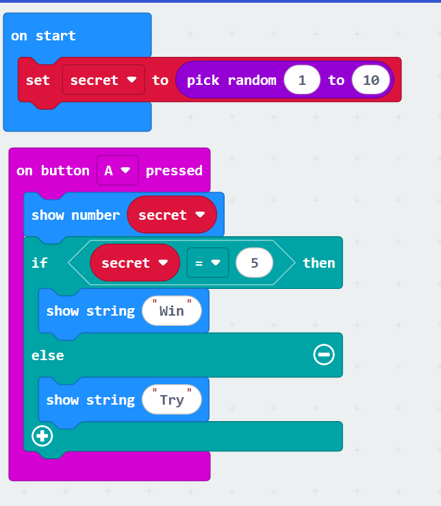

Task 1
What was the issue?
When button A is pressed, the increasing number is not displayed, and the number does not change.
How did you solve it?
The initial number should be defined as 0 when the computer is turned on.The link is added after changing the number: showing the number.
Share a screenshot of the solution:
Task 2
What was the issue?
In this project, we aim to turn pin one on when the place is dark. The flashlight turns on when it's dark but never turns off again when the room brightens.
How did you solve it?
To solve this problem, we can add a constraint. In the ELSE case (i.e., when the brightness condition is reached), turn P1 to 0 and the flashlight will turn off.
Share a screenshot of the solution:
Task 3
What was the issue?
The bug that occurs is that randomly generated numbers are not displayed. We can't tell if we guessed the number 5.
How did you solve it?
After randomly generating numbers, we can add a condition: show number secret, so that we can see the numbers we get, and then judge whether it is win or not according to the conditions.
Share a screenshot of the solution:
